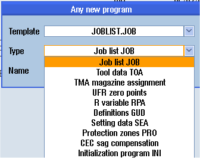

In each directory or subdirectory you can create a file in any format that you specify.
|
Note
|
File extensions
In the NC memory, the extension must have 3 characters, and DIR or WPD are not permitted.
|
In the NC memory, you can create the following file types under a workpiece using the "Any" softkey.

Procedure
 | 1. | Select the "Program manager" operating area. |
| | 2. | Select the desired storage location and position the cursor on the folder in which you would like to create the file. |
 | 3. | Press the "New" and "Any" softkeys. The "Any New Program" window opens. |
| | 4. | Select a file type from the "Type" selection field (for example, "Definitions GUD") and enter the name of the file to be created when you have selected a workpiece directory in the NC memory. |
| | | The file automatically has the selected file format. |
| | | - OR - |
| | | Enter a name and file format for the file to be created (e.g. My_Text.txt). |
 | 5. | Press the "OK" softkey. |